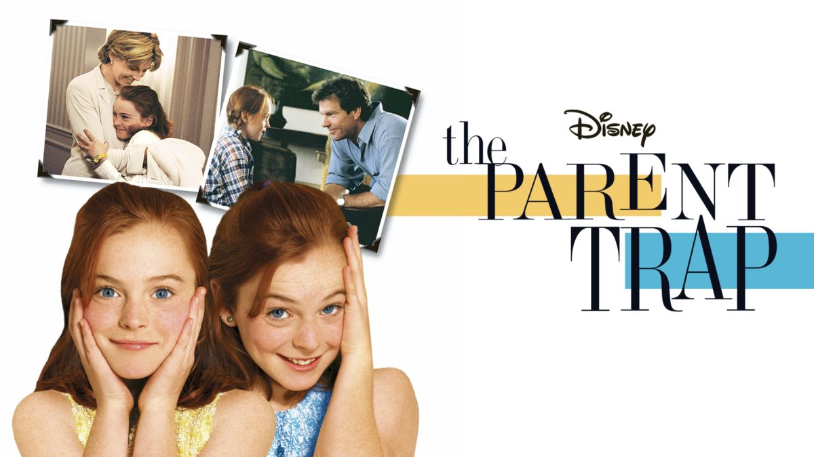

| s.n num |
|
Movie Image |
Movie Title |
Movie Description |
| 1 |
.jpeg)
|
The Lost City |
Reclusive romance novelist on a book tour with her cover model gets swept up in a kidnapping attempt that lands them both in a cutthroat jungle adventure |
| 2 |

|
The Parent Trap |
Twins Annie and Hallie, separated at birth and each raised by one of their biological parents, discover each other for the first time at summer camp and make a plan to bring their wayward parents back together |
| 3 |

|
Avatar |
A paraplegic Marine dispatched to the moon Pandora on a unique mission becomes torn between following his orders and protecting the world he feels is his home. |
| 4 |

|
Inception |
A thief who steals corporate secrets through the use of dream-sharing technology is given the inverse task of planting an idea into the mind of a C.E.O., but his tragic past may doom the project and his team to disaster. |
| 5 |

|
Secret Invasion |
Fury and Talos try to stop the Skrulls who have infiltrated the highest spheres of the Marvel Universe. |
| 6 |

|
Murder Mystery 2 |
Adam Sandler and Jennifer Aniston reunite as Nick and Audrey Spitz, who are now full-time detectives struggling to get their private eye agency off the ground. The duo find themselves at the center of international abduction when their friend is kidnapped at his own wedding. |
| 7 |

|
Intersteller |
A team of explorers travel through a wormhole in space in an attempt to ensure humanity's survival. |
| 8 |

|
Parasite |
Greed and class discrimination threaten the newly formed symbiotic relationship between the wealthy Park family and the destitute Kim clan. |
| 9 |

|
I See You |
policeman and his doctor wife have some marriage problems and the son blames the mother. For his job, the policeman investigates a case of a missing boy. The possible kidnapping looks like some cases from a few years ago. |
| 10 |

|
Black Panther |
The people of Wakanda fight to protect their home from intervening world powers as they mourn the death of King T'Challa. |